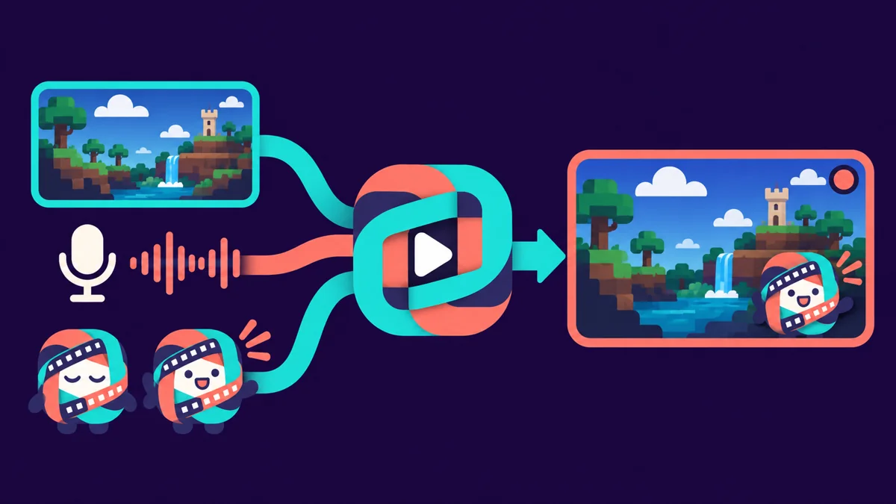
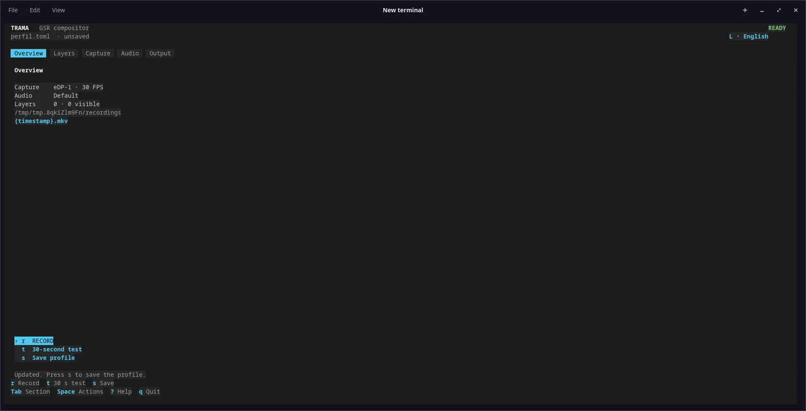

Layers you arrange
PNG, JPG and GIF layers with configurable position, size, order and visibility. Hide, reorder or remove them without leaving the TUI.
Open-source screen recorder for Linux
Trama is a keyboard-driven screen recorder for Linux. Add PNG, JPG or GIF layers, place a GIF avatar that reacts to your microphone level, and capture system and microphone audio to a GPU-encoded MKV.
Experimental 0.1.0-alpha1 · Flatpak for Linux x86_64. Tested on Pop!_OS 24.04 with COSMIC/Wayland and Intel Iris Xe.

Features
PNG, JPG and GIF layers with configurable position, size, order and visibility. Hide, reorder or remove them without leaving the TUI.
An idle GIF and a talking GIF, placed in any corner. The avatar switches with microphone level, not voice recognition or AI.
Record system audio and microphone together. Output is SDR MKV with H.264 encoded on the GPU, using the bundled capture engine.
Save TOML profiles to reuse a scene and record directly from the CLI. The TUI is available in English and Spanish.
This release focuses on local recording. Streaming, live preview and text overlays are not included.
How it works
flatpak run io.github.xoloitzcuintle95.Trama. In the TUI, p picks the screen, m the microphone, and g toggles system audio.
Install
The capture engine is included in the Flatpak, so you do not install GPU Screen Recorder separately.
The capture engine is bundled. Flatpak must be installed on your system; see the installation guide for runtime setup, checksums and permissions.
Download Flatpak · 0.1.0-alpha1
Install the downloaded bundle system-wide, then launch from a terminal:
sudo flatpak install --system ./trama-0.1.0-alpha1-x86_64.flatpak
flatpak run io.github.xoloitzcuintle95.TramaNot on Flathub. System-wide installation at the standard location is required. Installation needs authorization; run Trama without sudo.
About permissions. Trama’s Flatpak grants file, device and audio access for screen capture, loading graphics and saving recordings. File access extends beyond the files you select. For Wayland capture, the bundled GPU Screen Recorder uses a helper authorized through Polkit; only that helper runs with elevated privileges, not Trama’s interface or compositor. Host execution and these broad permissions mean this package is not a strong sandbox. See how capture permissions and authorization work.
Compatibility
Available as a Flatpak for x86_64 systems, with the capture engine included.
Tested on Pop!_OS 24.04 with COSMIC, Wayland and Intel Iris Xe. Other distributions, desktops and GPUs remain unverified. X11 is not enabled by the package's default permissions.
A Wayland session, GPU H.264 encoding, compatible graphics drivers and a working Polkit authorization agent are required. There is no CPU encoding fallback. Flatpak simplifies installation; it does not guarantee capture support.
Trama is free and open source, provided as is. If it doesn’t work on your setup, report the issue using the compatibility guide.